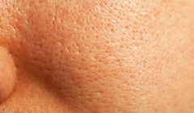
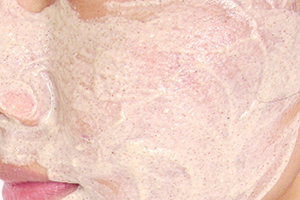

Face Open Pores


1. Whip two egg whites with the juice of half a lemon till the two ingredients are completely blended. Apply this pack on the skin and leave for 10-15 minutes. Repeat this remedy continuously for a month to help shrink pores and tighten the skin.
2. Make a mixture of 1 tablespoon of gram flour with 2 tablespoons of curd and mix well. Apply this paste on your face and leave for 20 minutes then wash your face with cold water. This will help to open clogged pore and tone your skin. This remedy can be done twice a week to get a pore-free smooth skin.
3. Papaya is a rich source of antioxidant nutrients that help in improving skin’s texture, elasticity and appearance. Take a fresh, ripe papaya and mash to make a paste. Apply the paste onto the face and leave for about 15-20 minutes, then use lukewarm water to wash your face.
4. Mix 2 tablespoons of fuller’s earth (multani mitti) with 1 tablespoon of honey and milk. Mix all these ingredients well, and then apply this mixture all over your face. Leave it for 15-20 minutes then wash off your face with cold water. This will help closing the open pores and will keep the skin nourished.
5. Raw milk has been used as a natural cleanser to clean the skin. First, wash your face thoroughly, and then dab cotton ball in raw milk and gently rub over your face. This remedy helps in cleansing the open pores and prevents dirt that may be clogging them.
6. Ice cubes are another remedy that can also be used to tighten the pores and tone up the skin. Rub your face with an ice cube for 1-2 times a day for about 5-10 minutes.
7. The vitamin C present in tomato can work wonders to clogged pores. Extract the juice from tomato and add with a little honey on it. Mix well and then apply this mixture on your face daily.
8. Make a mixture of cucumber juice with few drops of rose water and apply the mixture onto the face. Leave for 15-20 minutes and wash your face. This remedy will help in treating open pores and in improving the skin texture as well.